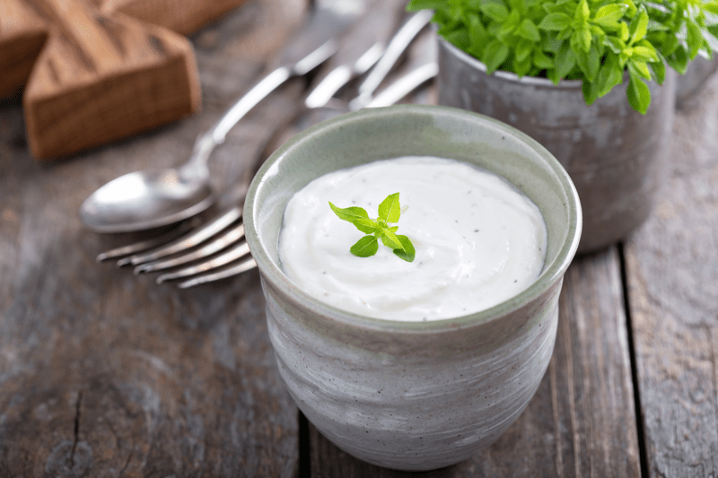

Macadamia Nut Cream Base (sweet or savory)
– raw, vegan, gluten-free –
The color, softness and subtle flavor of macadamia nuts make them ideal for whipping up into an easy, tasty and versatile cream. They’re the perfect plant-based vessel that lends healthy fats and a rich creamy texture. All that and a buttery hint of flavor, but mostly a neutral flavor profile. This neutrality makes it easy to dress it up however you see fit; making it sweet or savory.

For a real simple idea in making the base savory, add 2 Tbsp lemon juice, add a splash of raw apple cider vinegar and 1/2 tsp salt. From there you can add fresh minced herbs, and some nutritional yeast to make a great sauce to toss with zucchini noodles. How about adding sun-dried tomatoes and diced olives, or mix in some pesto to use as a spread on wraps or crackers. You can even use the cream base for savory, creamy soups.
To create a sweetened version add; 4-6 Tbsp of raw agave nectar or a couple of pitted Medjool dates, 1/2 tsp vanilla and a dash of salt. You can add cinnamon, pumpkin spice (great for the holidays), minced dried fruit, or fresh fruit. You can blend it into decadent and healthy smoothies, or make healthy, vegan ice-cream! How about stirring it through a small bowl of fresh berries for an instant treat?! As you can see, you can make endless varieties of dishes with this simple base.
I hope you enjoy this simple recipe. Have a blessed day, amie sue
 Ingredients:
Ingredients:
Yields 2 3/4 cup using 1 cup water
- 2 cups raw macadamia nuts, soaked 4+ hours
- 1 – 1 1/2 cups water
- 2 Tbsp coconut oil, melted
Preparation:
- Soak the macadamia nuts in 4 cups of water for 4-8 hours. Once ready to use, drain and discard the soak water.
- Place the macadamia nuts, water, and coconut oil in a high-powered blender. Note ~ start with 1 cup of water and add more if needed. This can vary from batch to batch, it just depends on how much liquid the nuts absorb, how soft they are and what consistency you want. Blend until completely smooth and free from any grit. This can take 1-3 minutes based on the machine. If you’re not using a high-speed blender such as a Vita-Mix or Blendtec, which creates an ultra-smooth cream, strain the cream through a fine-mesh sieve.)
- It can be stored in the fridge for 2 to 3 days and/or frozen for up to 6 months (once defrosted, give it a few spins in the blender to smooth things back up again).
- To create a base that is a very thick cream… all the way to a milk-like consistency, add the following liquid:
-
- 1/2 cup liquid = very thick cream
- 3/4 cup liquid = semi-thick cream
- 1 cup liquid = light cream
- 1 1/4 cup liquid = sauce-like cream
- 3 cups liquid = thick milk
© AmieSue.com